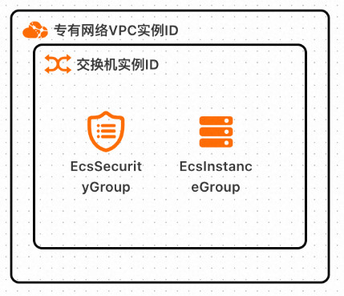
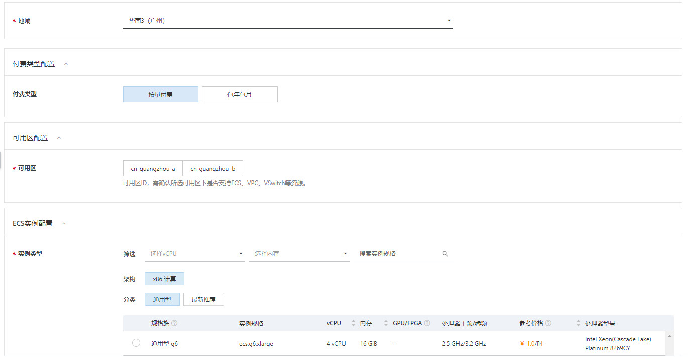
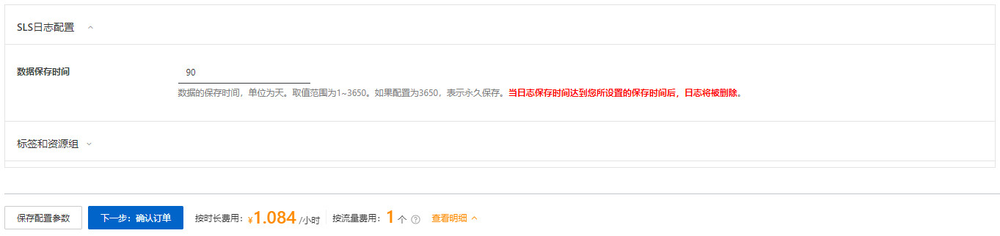
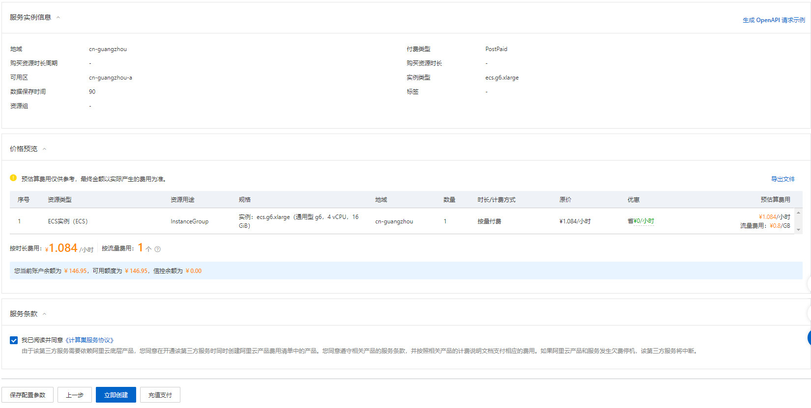
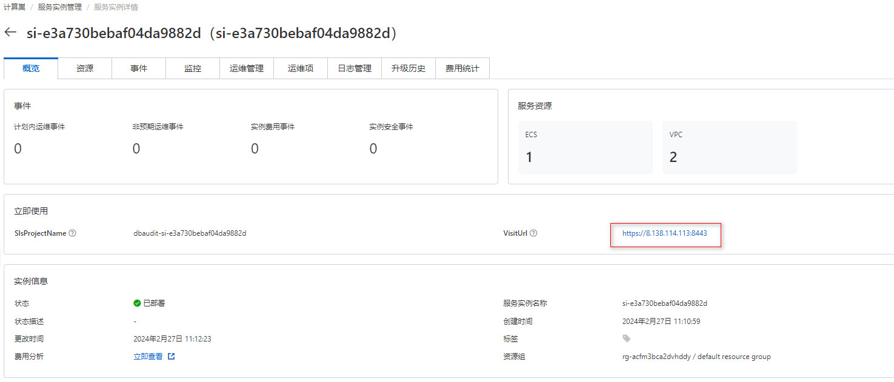

绿盟数据库审计服务实例部署文档
概述
数据库审计系统是一款通过对数据库网络流量的采集，基于数据库协议解析与还原技术的数据库安全审计系统。本系统实现对数据库所有访问行为的监控和审计、对其中的危险操作进行多种方式的告警、对数据库访问行为进行多维度的统计并进行图形化展现。
计费说明
在计算巢上的费用主要涉及：
- 所选vCPU与内存规格
- 系统盘类型及容量
- 公网带宽
计费方式包括：
- 按量付费（小时）
- 包年包月
目前提供如下实例：
| 规格族 | vCPU与内存 | 系统盘 | 公网带宽 |
|---|---|---|---|
| ecs.g7a.xlarge | AMD 通用型 g7a，4vCPU 16GiB | ESSD云盘 200GiB PL1 | 固定带宽1Mbps |
| ecs.g7.xlarge | 通用型 g7，4vCPU 16GiB | ESSD云盘 200GiB PL1 | 固定带宽1Mbps |
| ecs.g6.xlarge | 通用型 g6，4vCPU 16GiB | ESSD云盘 200GiB PL1 | 固定带宽1Mbps |
| ecs.g6e.xlarge | 通用平衡增强型 g6e，4vCPU 16GiB | ESSD云盘 200GiB PL1 | 固定带宽1Mbps |
| ecs.g6a.xlarge | AMD 通用型 g6a，4vCPU 16GiB | ESSD云盘 200GiB PL1 | 固定带宽1Mbps |
| ecs.t6-c1m4.xlarge | 突发性能实例 t6，4vCPU 16GiB | ESSD云盘 200GiB PL1 | 固定带宽1Mbps |
| ecs.e-c1m4.xlarge | ecs.e，4vCPU 16GiB | ESSD云盘 200GiB PL1 | 固定带宽1Mbps |
| ecs.g7a.2xlarge | AMD 通用型 g7a，8vCPU 32GiB | ESSD云盘 200GiB PL1 | 固定带宽1Mbps |
| ecs.g6.2xlarge | 通用型 g6，8vCPU 32GiB | ESSD云盘 200GiB PL1 | 固定带宽1Mbps |
| ecs.g7.2xlarge | 通用型 g7，8vCPU 32GiB | ESSD云盘 200GiB PL1 | 固定带宽1Mbps |
| ecs.g6e.2xlarge | 通用平衡增强型 g6e，8vCPU 32GiB | ESSD云盘 200GiB PL1 | 固定带宽1Mbps |
| ecs.g6a.2xlarge | AMD 通用型 g6a，8vCPU 32GiB | ESSD云盘 200GiB PL1 | 固定带宽1Mbps |
| ecs.e-c1m4.2xlarge | ecs.e，8vCPU 32GiB | ESSD云盘 200GiB PL1 | 固定带宽1Mbps |
| ecs.t6-c1m4.2xlarge | 突发性能实例 t6，8vCPU 32GiB | ESSD云盘 200GiB PL1 | 固定带宽1Mbps |
预估费用在创建实例时可实时看到。 如需更多规格、其他服务（企业级支持服务等），请联系我们，服务热线：400-818-6868
部署架构

RAM账号所需权限
服务需要对ECS、VPC等资源进行访问和创建操作，若您使用RAM用户创建服务实例，需要在创建服务实例前，对使用的RAM用户的账号添加相应资源的权限。添加RAM权限的详细操作，请参见为RAM用户授权。所需权限如下表所示。
| 权限策略名称 | 备注 |
|---|---|
| AliyunECSFullAccess | 管理云服务器服务（ECS）的权限 |
| AliyunVPCFullAccess | 管理专有网络（VPC）的权限 |
| AliyunROSFullAccess | 管理资源编排服务（ROS）的权限 |
| AliyunComputeNestUserFullAccess | 管理计算巢服务（ComputeNest）的用户侧权限 |
| AliyunLogFullAccess | 管理日志服务（Log）的权限 |
部署流程
部署步骤
-
在创建服务实例页面填写配置信息。 
-
配置信息填写完成后，点击下一步确认订单。 
-
确认配置信息是否正确，同意服务条款，最后点击立即创建。 
部署参数说明
您在创建服务实例的过程中，需要配置服务实例信息。
| 参数组 | 参数项 | 示例 | 说明 |
|---|---|---|---|
| 地域 | 华南3（广州） | 选中服务实例的地域，建议就近选中，以获取更好的网络延时。 | |
| 付费类型配置 | 付费类型 | 按量付费 | 根据实际情况填写。 |
| 可用区配置 | 可用区 | cn-guangzhou-a | 根据实际情况填写。 |
| ECS实例配置 | 实例类型 | 通用型 g6 ecs.g6.xlarge | 根据实际情况填写。 |
| SLS日志配置 | 数据保存时间 | 90 | 默认数据保留为90天，可以根据实际情况填写。 |
验证结果
- 查看服务实例。服务实例创建成功后，部署时间大约需要5分钟。部署完成后，页面上可以看到对应的服务实例。
- 进入到对应的服务实例后，可以在页面上获取到 web 的访问地址。 
使用文档
请访问官网了解如何使用：使用文档
问题排查
请访问问题排查链接获取帮助。
联系我们
欢迎访问绿盟科技官网（https://www.nsfocus.com.cn/）了解更多信息。
绿盟科技智能客服（https://user.nsfocus.com/visitor/outSideChat）
服务热线：400-818-6868
扫码关注微信公众号，技术博客、活动通知不容错过：
© 2009-2022 Aliyun.com 版权所有